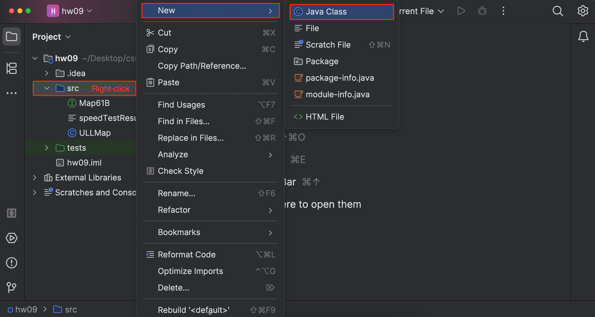
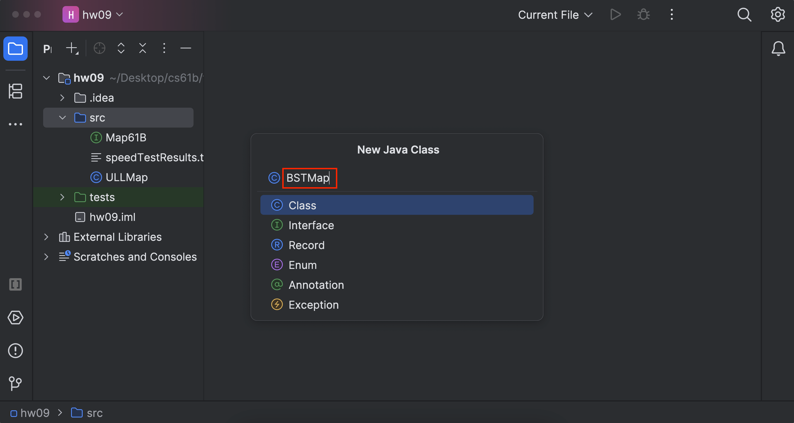
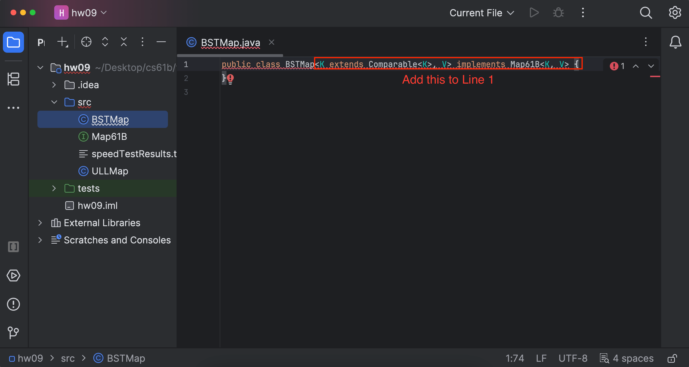
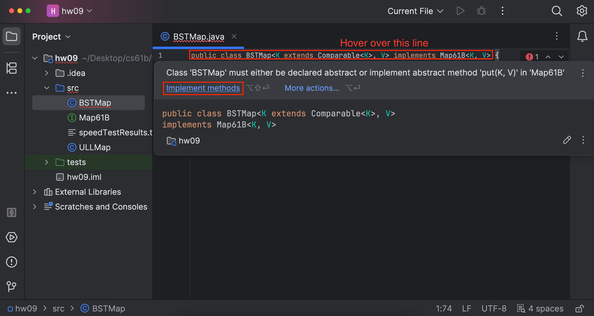
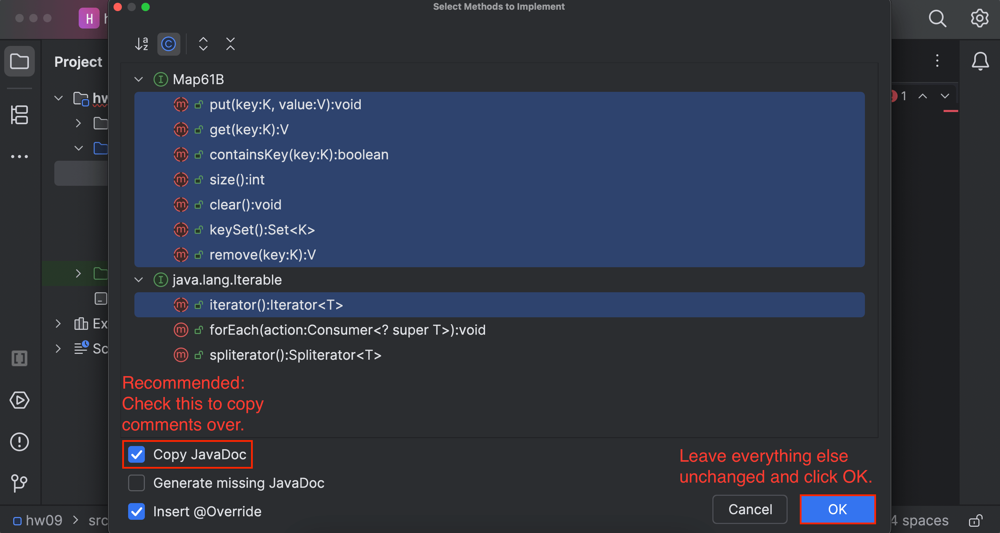

Homework 9: BSTMap
Lectures needed for this homework: Lecture 16 (Extends, Sets, Maps, and BSTs), or Chapter 16 of the textbook.
Reminder that you must follow the style guide, and that you can check style yourself in IntelliJ as many times as you want.
Setup
Follow the Assignment Workflow Guide to get started with this assignment. This starter code is in the hw09 folder.
In this homework, you’ll create BSTMap, a BST-based implementation of the Map61B interface, which represents a basic tree-based map. You will be creating this completely from scratch, using the interface provided as your guide.
To get started, create a new class named BSTMap:


Your BSTMap should ensure that generic keys K in BSTMap<K, V> implement Comparable. This is called a bounded type parameter. The syntax is a little tricky, but feel free to copy our example below for now.
You may have noticed that the syntax for a bounded type parameter uses extends even though Comparable is an interface. In the context of bounded type parameters, extends can mean extends or implements. Don’t ask us why - we don’t know either. (The syntax also implies you can “extend” final classes such as Integer, which is impossible. Go Java!)
Next, edit the declaration of your class so that it looks like this:
public class BSTMap<K extends Comparable<K>, V> implements Map61B<K, V> {

Recall (e.g. from LinkedListDeque61B and ArrayDeque61B) that IntelliJ has a nice feature that will generate the method signatures for you. If you’re implementing an interface and haven’t implemented all the methods, IntelliJ will highlight the class signature in red. If you hover over this, you should be able to select Implement methods.
On the pop-up window, make sure you’ve selected the option for “Copy JavaDoc” and “Insert @Override”. Click “OK” and IntelliJ should populate the class with the required method signatures (they won’t be functional though!) and copy over the comments.
Hover your mouse over the red squiggle, and click the “implement methods” button when the error message box pops up. This will autogenerate the method headers for you.


At this point, you should have all the method signatures required for Map61B.
Task 1: BSTMap
In this homework (and future homeworks), we may not provide as much skeleton code as in the past. If you’re having trouble getting started, please come in to assignment section or check out these resources:
- Fall 2025, Lecture 16 slides.
ULLMap.java(given insrc/), an unordered, linked-list-basedMap61Bimplementation.- To help you also get started, an algorithmic guide to
putandgetcan be found in this video.
Implement the methods in your
BSTMapclass. The following methods are required:
void put(K key, V value): Associates the specifiedkeywith thevalue.V get(K key): Returns the value that is associated withkey.boolean containsKey(K key): Returns if this map has a mapping for the givenkey.int size(): Returns the number of key-value mappings.void clear(): Removes every mapping from this map.
Make sure to read through the comments for each method in the Map61B interface to fully understand what to implement. The above descriptions are not necessarily comprehensive.
The iterator, remove, and keySet methods are optional. If you are not implementing them, throw an UnsupportedOperationException, like below:
throw new UnsupportedOperationException();
Note: The bounded type parameter syntax (<K extends Comparable<K>, V>) is a little tricky, but we’ve given an example below. Here, we are creating a BSTSet for Comparable objects. We’ve included the rather strange compareRoots for pedagogical purposes (for a compareTo refresher, see this documentation):
public class BSTSet<K extends Comparable<K>> implements Set61B<K> {
private class BSTNode {
K item;
// ...
}
private BSTNode root;
/* Returns whether this BSTSet's root is greater than, equal to, or less
* than the other BSTSet's root, following the usual `compareTo`
* convention. */
public int compareRoots(BSTSet other) {
/* We are able to safely invoke `compareTo` on `n1.item` because we
* know that `K` extends `Comparable<K>`, so `K` is a `Comparable`, and
*`Comparable`s must implement `compareTo`. */
return this.root.item.compareTo(other.root.item);
}
// ...
}
Remember, the code snippet above emulates a Set - you’ll need to implement a Map. We recommend you use similar logic for BSTMap, with some nested node class to help facilitate your implementation. Your BSTMap has two generic parameters K and V, representing the generic types of the keys and values in your BSTMap, respectively.
Note: We strongly recommend you create helper methods to facilitate your implementation (specifically, recursive helper methods are strongly encouraged). Also, remember to avoid arms length recursion (checking whether the current node’s left/right are null instead of checking the node is null). Refer to lecture 16 slides for more information.
You can test your implementation using TestBSTMap.java.
Unfortunately, most methods you need to implement rely on others for testing purposes (get requires put, etc.). This makes it difficult to test most methods until you implement put. We recommend you implement the methods in the order specified in Map61B.
Hint: If you’re erroring on this line in treeTest:
assertThat(b.size()).isEqualTo(5)
Keep in mind that put doesn’t always add a new value to the tree. If put is called with an existing key, it should just update the value, which shouldn’t change the size.
Task 2: How Fast Is It?
Now that you’ve completed your implementation, you’ll compare the performance of your implementation to a list-based Map implementation ULLMap as well as the built-in Java TreeMap class (which uses a BST variant known as a red-black tree).
There is one interactive speed test provided in InsertRandomSpeedTest.java. Do not attempt to run this test before you’ve completed BSTMap. Once you’re ready, you can run the tests in IntelliJ.
The InsertRandomSpeedTest class performs tests on element-insertion speed of your BSTMap, ULLMap (provided), Java’s built-in TreeMap, and Java’s built-in HashMap (which you’ll explore more in a later homework). It works by asking the user for a desired length of each String to insert, and also for an input size (the number of insertions to perform). It then generates that many Strings of length as specified and inserts them into the maps as <String, Integer> pairs.
Try it out and see how your data structure scales with the number of insertions compared to the naive and industrial-strength implementations. Remember that asymptotics aren’t representative on small samples, so make sure your inputs are sufficiently large if you are getting a confusing trend (keep in mind that there is a limit thought - if you enter too large of a value, the program might overflow, so play around with sufficiently large values). Record your results in a file named speedTestResults.txt.
Run the speed tests and record your results in speedTestResults.txt. There is no standard format required for your results, but at a minimum, you should include what you did and what you observed.
Optional Exercises
Optional BSTMap Methods
These will not be graded, but you can still receive feedback using the local tests, specifically TestBSTMapExtra.java (and on the autograder).
Implement the methods iterator(), keySet(), remove(K key) in your BSTMap class. When implementing the iterator method, you should return an iterator over the keys, in sorted order. remove() is fairly challenging - you’ll need to implement Hibbard deletion.
For remove, you should return null if the argument key does not exist in the BSTMap. Otherwise, delete the key-value pair (key, value) and return value.
Optional Asymptotics Problems
This part is also optional, and we’ve included it here for additional practice on asymptotics.
Given B, a BSTMap with N key-value pairs, and (K, V), a random key-value pair, answer the following questions.
Unless otherwise stated, “big-Oh” bounds (e.g. $O(N)$) and “big-Theta” bounds (e.g. $\Theta(N)$) refer to the number of comparisons in the given method call(s).
For questions 1-7, state whether the statement is true or false. For question 8, give a runtime bound.
B.put(K, V)$\in O(\log N)$B.put(K, V)$\in \Theta(\log N)$B.put(K, V)$\in \Theta(N)$B.put(K, V)$\in O(N)$B.put(K, V)$\in O(N^2)$- For a fixed key
Cnot equal toK, bothB.containsKey(C)andB.containsKey(K)run in $\Omega(\log N).$ - (This question is quite difficult.) Let
bbe aNodeof aBSTMap, and two subtrees rooted atroot, calledleftandright. Further, assume the methodnumberOfNodes(Node p)returns the number of nodes ($M$) of the subtree rooted atpand runs in $\Theta(M)$ time. What is the running time, in both the worst and best case, ofmystery(b.root, z), assuming1 <= z < numberOfNodes(b.root)?
Hint: See if you can work out what mystery does first, then see how it accomplishes it.
public Key mystery(Node b, int z) {
int numLeft = numberOfNodes(b.left);
if (numLeft == z - 1) {
return b.key;
} else if (numLeft > z) {
return mystery(b.left, z);
} else {
return mystery(b.right, z - numLeft - 1);
}
}
Solutions to asymptotics problems (click to expand)
- False. Worst case is $\Theta(N)$, for a spindly BST
- False. Worst case is $\Theta(N)$
- False. Best case is $\Theta(\log(N))$, for a bushy BST
- True
- True (remember that big-O need not be tight unless otherwise specified!)
- False. In the best case, these nodes are near the root. Note that if `C` and `K` are randomly chosen, then this is True in the amortized case, since the depth of the average node in the tree is given by the sum $$ \sum_{h=1}^{\lg n} \frac{h2^h}{N} \in \Theta(\log N)$$
- `mystery` finds the
zth largest element in the BST (indexed from 1). It does this by calculating the number of elements in the left subtree, then going to the right or left subtree depending on whether we have too many elements in the left subtree or not enough. Note thatnumLeftwill take proportional time to the number of nodes in the left subtree, so the amount of work in one recursive subcall is $\Theta(\text{number of nodes in left subtree})$.
zth largest element, in which case it will take $\Theta(\text{number of nodes in left subtree})$ time (because there is no recursive call).
- Bushy Tree: There are $\frac{N}{2} - 1$ nodes in the left subtree, so the runtime is $\Theta(N)$ in the best case (when
z == N / 2). - Spindly Tree (Left): There are $N - 1$ nodes in the left subtree, so the runtime is $\Theta(N)$ in the best case (when
z == N). - Spindly Tree (Right): There are $0$ nodes in the left subtree, so the runtime is $\Theta(1)$ in the best case (when
z == 1).
- Bushy Tree: For the first recursive call, there are about $\frac{N}{2}$ nodes in the left subtree, then there will be about $\frac{N}{4}$ nodes in the left subtree of the second recursive call, and so on, until we hit a leaf. This means that the worst-case runtime is $\frac{N}{2} + \frac{N}{4} + \frac{N}{8} + \dots + 1 \in \Theta(N)$ (when
z == 1). - Spindly Tree (Left): In this case, each recursive call will have one less node in the left subtree as the parent node. This yields a sum of $N + (N-1) + (N-2) + \dots + 1 \in \Theta(N^2)$ (when
z == 1). - Spindly Tree (Right): There are $0$ nodes in the left subtree at each recursive call, and the height of the tree is $N$, so the worst-case runtime is $\Theta(N)$ (when
z == N).
Submission
Graded files that you need to modify:
BSTMap.javaspeedTestResults.txt
You must follow the style guide for BSTMap.java. You can check style yourself in IntelliJ as many times as you want.
Follow the Assignment Workflow Guide to submit. You can submit as many times as you want.
The tests on Gradescope are the same as the provided tests in TestBSTMap.java. The score you see on Gradescope is your final score for this homework.